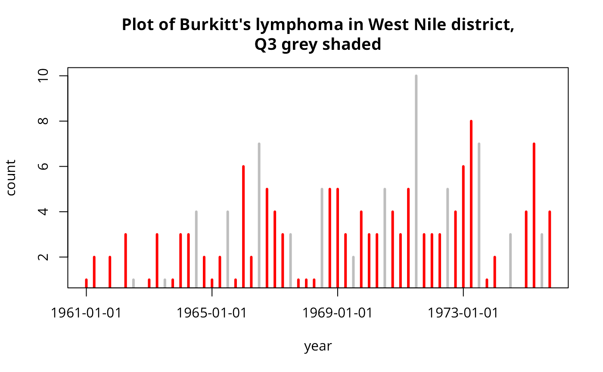

burkitt.RdLocations of cases of Burkitt's lymphoma in the Western Nile
district of Uganda 1960-1975. The time variable is recorded as the number of
days starting from an origin of 1 Jan 1960. The examples given below show
how the chron() function and derived time structures may be used to
analyse the data in the time dimension.
data(burkitt)The data is provided as a data table:
| x | numeric | grid eastings |
| y | numeric | grid northings |
| t | numeric | day number starting at 1/1/1960 of onset |
| age | numeric | age of child patient |
| dates | factor | day as string yy-mm-dd |
as a points object burpts of burkitt$x and burkitt$y; and a point object of the area boundary burbdy.
Williams, E. H. et al. 1978, - Bailey and Gatrell 1995, ch. 3.
Bailey, T. C. and Gatrell, A. C. 1995, Interactive spatial data analysis. Longman, Harlow.
data(burkitt)
burDates <- as.Date(as.character(burkitt$dates), "%y-%m-%d")
res <- aggregate(rep(1, length(burDates)), list(quarters(burDates), format(burDates, "%y")), sum)
plot(as.numeric(as.character(res$Group.2)) +
0.25*(as.numeric(substr(as.character(res$Group.1), 2, 2))-1),
res$x, type="h", lwd=3, col=ifelse(as.character(res$Group.1)=="Q3",
"grey","red"), xlab="year", ylab="count", xaxt="n")
axis(1, at=seq(61,75,4), labels=format(seq.Date(as.Date("1961/1/1"),
as.Date("1975/1/1"), "4 years")))
title("Plot of Burkitt's lymphoma in West Nile district,\nQ3 grey shaded")

op <- par(mfrow=c(3,5))
for (i in unique(format(burDates, "%y"))) {
polymap(burbdy)
pointmap(burpts[which(format(burDates, "%y") == i),], add=TRUE, pch=19)
title(main=paste("19", i, sep=""))
}
par(op)
op <- par(mfrow=c(2,2))
for (i in c("Q1", "Q2", "Q3", "Q4")) {
polymap(burbdy)
pointmap(burpts[which(unclass(quarters(burDates)) == i),], add=TRUE,
pch=19)
title(main=i)
}
par(op)
op <- par(mfrow=c(3,4))
for (i in months(seq(as.Date("70-01-01", "%y-%m-%d"), len=12, by="1 month"))) {
polymap(burbdy)
pointmap(burpts[which(unclass(months(burDates)) == i),], add=TRUE, pch=19)
title(main=i)
}
par(op)